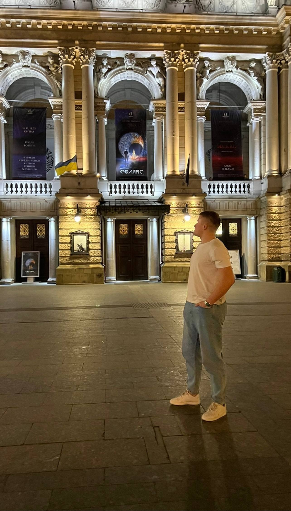
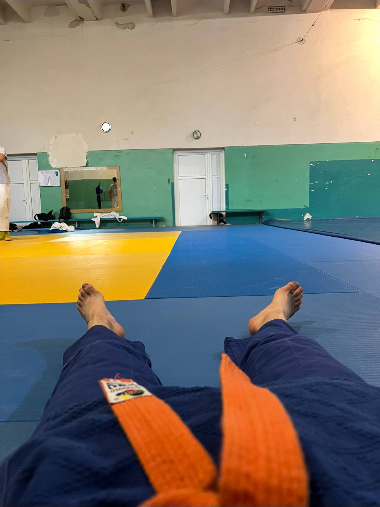
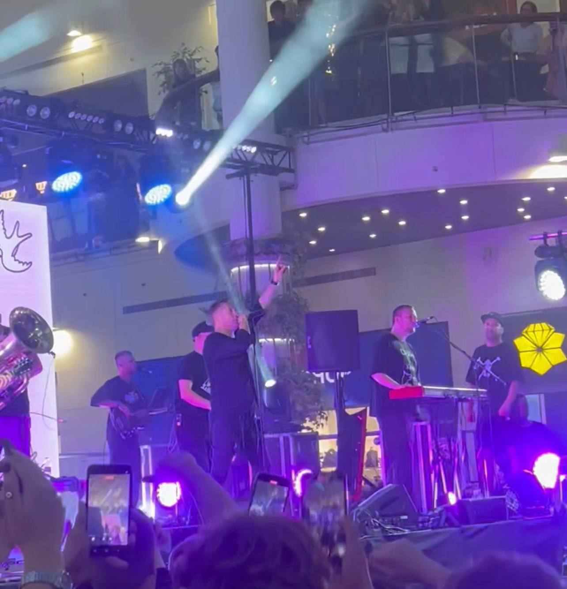
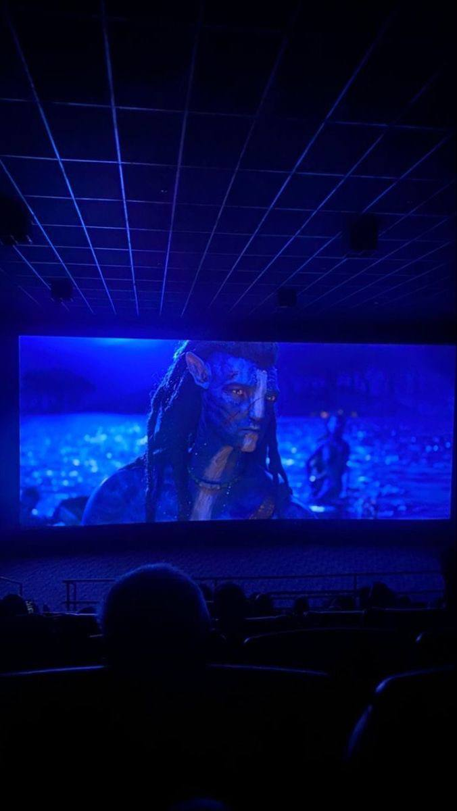
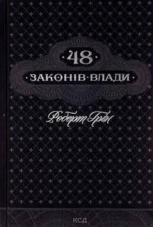
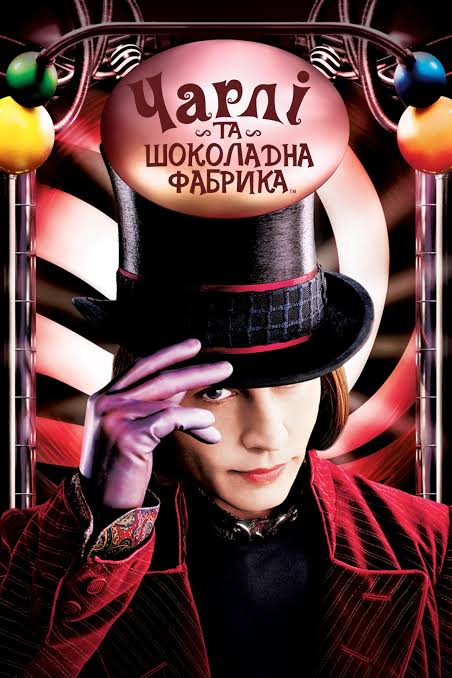
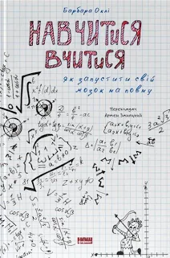
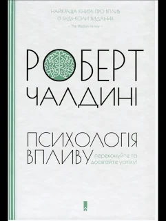
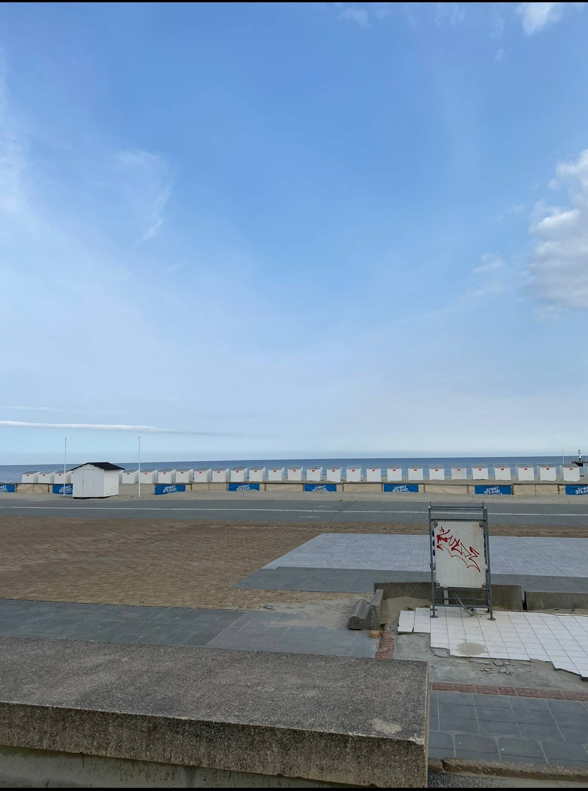

Рогатинський ліцей №1
—
Найбільше запам'яталися однокласники, хороші вчителі та різноманітні шкільні заходи — а найяскравіший спогад, звісно, випускний.

Привіт, мене звати
Мені 19 років, навчаюся на 3 курсі «Прикладної математики» в ЛНУ ім. Івана Франка. Більшість часу йде на пари й дзюдо, а решту стараюся проводити з користю.
У вільний час рибалю, читаю, дивлюся серіали й слухаю музику. Це портфоліо — мій навчальний проєкт з чистого HTML та CSS, без жодного рядка JavaScript.
—
Найбільше запам'яталися однокласники, хороші вчителі та різноманітні шкільні заходи — а найяскравіший спогад, звісно, випускний.
· спеціальність «Прикладна математика», 3 курс
Улюблені дисципліни — «Програмне забезпечення», «Основи веб-програмування» та ТІМС (теорія ймовірностей і математична статистика).
Тут пишемо реальні програми, а не просто вчимо теорію — мені так набагато цікавіше.
Завдяки цьому предмету з'явилося оце портфоліо. Подобається, що результат видно одразу.
Спочатку здавалося складно, та коли розібрався — виявилося дуже логічним і навіть цікавим предметом.

Ходжу в тренажерний зал і займаюся дзюдо — це і фізична форма, і дисципліна.
Найкращий спосіб відключитися від навчання хоча б на кілька годин.
Читаю переважно нонфікшн — про психологію, вплив та особисту ефективність.

Слухаю українську сцену майже щодня — під навчання, дорогу чи тренування.

Люблю вечір з хорошим серіалом — особливо коли сюжет тримає в напрузі.

Змінила погляд на те, як насправді працюють стосунки, вплив і репутація.
Перша книга, яка змусила мене замислитися про фінансову грамотність по-справжньому.

Улюблена книга з дитинства — досі іноді перечитую окремі розділи для настрою.

Практичні техніки, які реально допомогли швидше засвоювати складні предмети.

Після цієї книги стало набагато простіше помічати маніпуляції в рекламі та переговорах.
Переважно українська сцена — від репу до альтернативи. Ось виконавці, до яких повертаюся найчастіше:
Ходжу на дзюдо і займаюся в тренажерному залі. Найбільше пишаюся результатами на обласних змаганнях із дзюдо:
| Рік | Змагання | Рівень | Місце |
|---|---|---|---|
| 2022 | Обласні змагання з дзюдо | Юніори | 1 місце |
| 2023 | Обласні змагання з дзюдо | Юніори | 1 місце |
| 2024 | Чемпіонат області з дзюдо | Дорослі | 1 місце |

HTML5 · CSS3 · Grid · Flexbox
Навчальний проєкт з курсу «Основи веб-програмування» — адаптивний сайт mobile-first без фреймворків і без JS.
Переглянути демоC# · ООП
Лабораторна робота з курсу «Програмне забезпечення» — застосунок з класами, інтерфейсами та наслідуванням.
C# · Entity Framework Core · SQL Server
Практична робота з проєктування бази даних та роботи з нею через Code First і DB First підходи.
Завжди тримайте свої наміри в таємниці.
— Роберт Ґрін, «48 законів влади»
Чим більше ви говорите, тим простішими й більш уразливими здаєтеся, адже зайві слова легко обернути проти вас.
— Роберт Ґрін, «48 законів влади»
Будьте непередбачуваними.
— Роберт Ґрін, «48 законів влади»
Маєте питання щодо навчання чи хочете обговорити спільний проєкт? Напишіть мені.